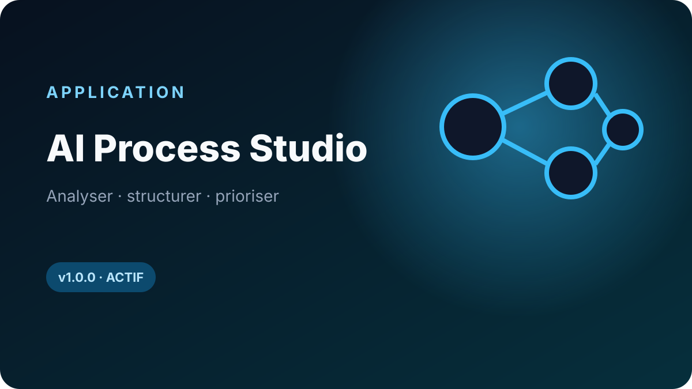

Comprendre et cartographier
Projets, espace local, découverte AS-IS, cartographie déterministe, documents locaux, sauvegardes et exports compatibles Community. Aucun plafond artificiel de projets ou de processus.
PROCESS INTELLIGENCE · LOCAL-FIRST · COMMUNITY 1.1.2
Comprendre un processus métier avant de parler technologie : documenter le fonctionnement réel, structurer les étapes et acteurs, puis cartographier le processus dans un espace local maîtrisé.

Process discovery · mapping · transformationCOMMUNITY JOURNEY
L'édition Community couvre le socle de compréhension du processus sans dépendre d'un service cloud ni d'une licence commerciale.
OPEN CORE
Le code public reste centré sur le socle métier. Les fonctions Professional sont distribuées séparément et ne sont pas dissimulées dans la Community derrière un simple verrou d'interface.
Projets, espace local, découverte AS-IS, cartographie déterministe, documents locaux, sauvegardes et exports compatibles Community. Aucun plafond artificiel de projets ou de processus.
Audit, AI Finder, Optimize, SOP et Roadmap sont inclus dans une même licence annuelle. Pas de comptage par utilisateur au lancement.
Les données restent locales par défaut. Pas de télémétrie obligatoire, pas de call-home de licence et pas de verrou matériel.
PROFESSIONAL 1.1.2
Professional reprend le socle Community et ajoute cinq modules pour analyser le processus, identifier les usages IA, construire la cible et organiser la mise en œuvre.
La licence est signée cryptographiquement et vérifiée localement. À expiration, l'application revient aux droits Community sans supprimer les données Professional.
Les mises à jour Professional publiées pendant les 12 mois de validité sont incluses dans l'offre de lancement.
Support de lancement par email, sans SLA contractuel ni engagement 24/7. Contact : contact@7-sens.fr.
OPERATING MODEL
AI PROCESS STUDIO PROFESSIONAL 1.1.2
Les cinq modules Professional sont inclus. La demande, la facturation et la livraison de la licence sont traitées manuellement au lancement.